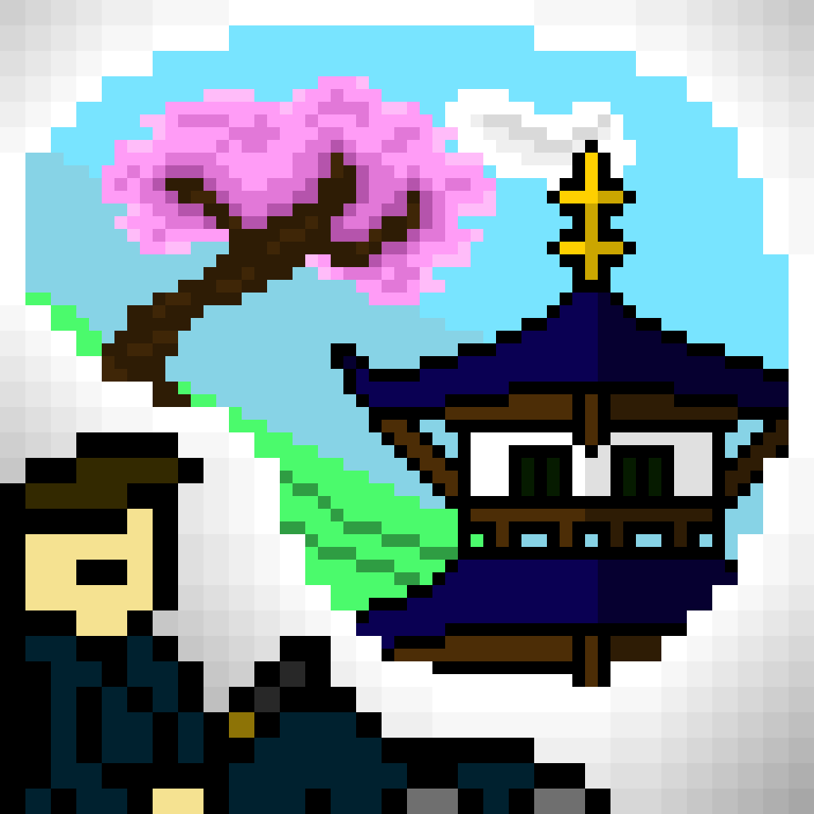

Ninja Dreams
This was our penultimate pixel art project, an animated scene based off of the single prompt "ninja dreams". I interpreted the prompt as literally as possible, depicting a ninja dreaming of his homeland as he slept. If you pay attention, you may also notice a certain Robot Prince of Auchtertool invading his mind.

Run Cycle
This was our final pixel art project, a fully animated run cycle of a character. I put a lot of effort into this one, first drawing a basic stick figure to model the general path the limbs of the character would take. Then, I put circles at the joints of the figure, connecting each of them with lines to give it more substance. Then, I went over the outlined areas with the general shape and color palette of the character, finally going over with shading to make sure the character's motion was visually obvious. The visually astute among you will notice that this is only half a run cycle, this is because I did the finishing touches at 11 PM and ran out of time for the rest of the animation.